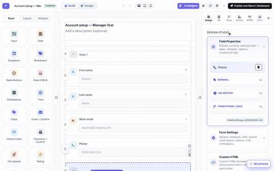

Field permissions — hide or lock fields by role
A form does not have to look the same for everyone. MegaForm lets you decide, per field, who can see it and who can see it but not edit it — using the roles your site already has. The rules are applied on the server when the form is delivered, not just hidden with CSS in the browser.

Steps shown
- In the builder, select a field and open the Access tab on the right.
- Scroll to Field visibility by role. Every field has two role lists:
- Visible to — tick the roles that may see the field. Untick everything and the field is visible to everyone (the default).
- Read-only for — tick roles that may see the field but not change it.
- In the recording, Phone is made visible only to Finance, and Work email is made read-only for Manager. Click Save — the rules apply when the form is saved.
- The same form is then opened by two real users:
- mgr.nam (role Manager): Phone is simply not there, and Work email renders locked — typing into it does nothing.
- fin.lan (role Finance): Phone is present and editable.
Where the rules are enforced
The role rules are stored in the form schema (showIf / readOnlyIf conditions with a Role
source) and applied on the server when the schema is served to the browser: the schema each
user downloads is projected for that user first. A field the caller may not see is removed
before the JSON leaves the server — checking the network response for the Finance-only field as a
Manager returns nothing to hide in the first place. An unresolvable or anonymous caller gets the
most-restricted projection, never the least.
The Access tab also holds the permission matrix
Above the per-field rules, the Access tab shows the form's permission matrix — one grid of role/user rows against form-level actions (submitting, reading records, inbox access, approvals). The matrix is shared canonical data across the Web, DNN and Oqtane hosts, so granting a role on one platform means the same thing on the others. Use Expand to see every column; Save Access Rules saves the matrix.
Roles are the host's roles. Like everywhere else in MegaForm,
ManagerandFinancehere are ordinary Oqtane/DNN site roles. Create the role and assign users in the platform's own user management first; then it appears in these pickers automatically — including named individual users, which can be ticked just like roles.
Sections and steps
Visibility rules are not limited to single inputs. Sections appear in the same Field visibility by role table with the same two role lists, so a whole block of a form can be role-gated the same way an individual field is.
Next steps
- Approval Workflows & Inbox — the same roles route approval tasks.
- Form Builder — everything else in the right-hand panel.